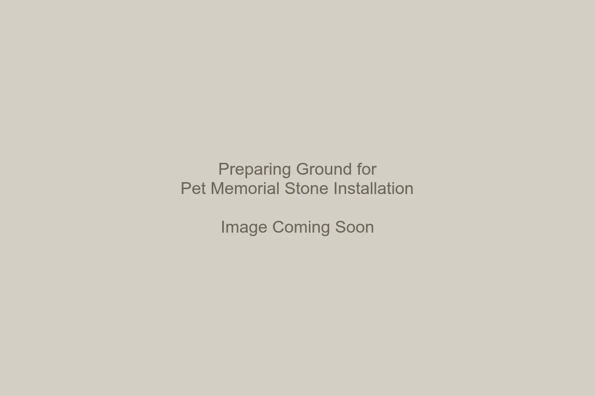
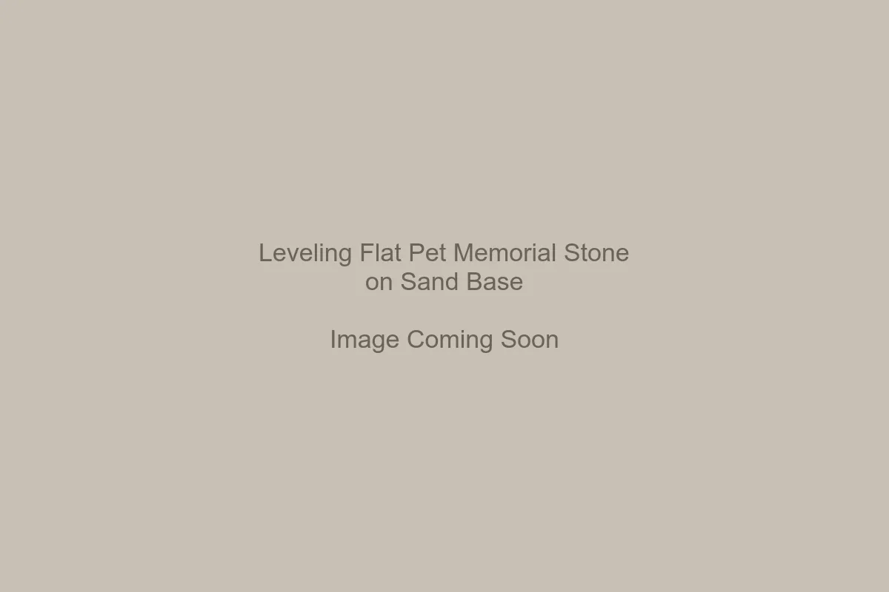

Why Proper Installation Matters
Simply placing a stone on top of grass often leads to shifting, sinking, or accidental damage from lawn mowers. A properly installed custom pet memorial stone sits flush with the ground and rests on a solid base, protecting it from frost heave and seasonal movement.
Tools You May Need
- Spade or garden trowel
- Measuring tape
- Play sand or crushed gravel (for larger stones)
- Wooden block or rubber mallet
- Small level (optional but recommended)
Step 1: Preparing the Ground
Place your stone on the desired spot and trace the outline with your spade. Remove the stone and dig out the sod and soil to a depth equal to the thickness of the stone plus about half an inch.
If you are installing one of our larger stones, specifically after choosing the right size like the 12x8, digging slightly deeper to add a more substantial base is recommended.
Step 2: Creating a Stable Base
Do not place the stone directly on loose, disturbed soil, as it will settle unevenly. Pour a ½ inch layer of sand or fine crushed gravel into the hole. Smooth it out so it is level. This acts as a cushion that allows water to drain and prevents the stone from rocking.
Step 3: Setting the Memorial Stone
Gently lower the stone into the prepared space. It should sit slightly above grade (ground level) to prevent grass from growing over the edges, but low enough to avoid being struck by mower blades if placed in a lawn.

Use a level to check your work. If it's uneven, lift the stone and adjust the sand bed. Do not try to force it down by hitting it directly with a hammer—this can chip the stone. Use a rubber mallet or a block of wood to gently tap it into place.
Step 4: Backfilling and Finishing
Once the stone is level and stable, fill any gaps around the edges with soil. Pack it down firmly with your fingers or the handle of your trowel. Water the area lightly to help the soil settle.
Preventing Future Shifting
In colder climates, freeze-thaw cycles can push stones upward over time. The sand base helps mitigate this. If you are comparing materials, our Granite vs Cast Stone guide explains how heavier, denser materials like ours naturally stay put better than lightweight alternatives.
FAQ
Can I glue the stone to a larger base?
Yes, you can adhere granite to a concrete paver using construction adhesive for added
elevation in garden beds.
Will a lawn mower damage it?
Granite is tough, but a steel blade can chip the edges. We recommend keeping the stone flush
with the ground or creating a small mulch border around it.
Should I seal the stone before installing?
Our natural stones do not require sealing. They are designed to breathe and weather
naturally.